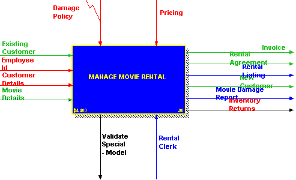
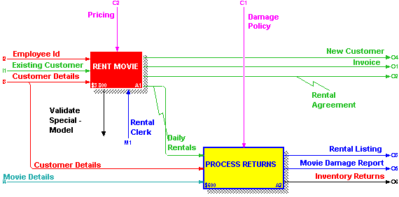
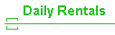
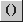
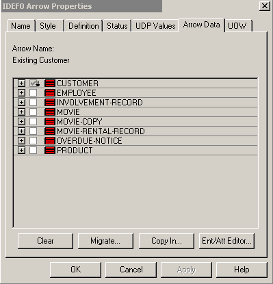
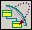

Cоздание моделей бизнес-процессов с помощью CASE-средства BpWin.
Прежде всего остановлюсь на одном важном моменте. Я рассматриваю BpWin прежде всего как
При этом следует отметить, что
Система, построенная на основании гибкой и точной модели данных, адекватно отражающей предметную область, может использоваться не только на данном этапе, но и в будущем, когда бизнес-процессы изменятся и уже не будут соответствовать текущей модели. Это возможно только в том случае, когда моделирование данных является фундаментальным этапом проектирования системы. Если фундаментальным этапом будет моделирование бизнес-процессов, то модель данных будет отражать взгляд на предметную область с точки зрения бизнес-процессов, протекающих в ней на данном этапе, т.е современный, в определенной степени односторонний, взгляд.
Поэтому я рекомендую:
Общее описание BpWin.
Средство BpWin поддерживает следующие методологии анализа бизнес- процессов:
Мы ограничимся рассмотрением методологии IDEF0. В любой момент можно переключаться с одной методологии на другую, диаграммы разного формата могут сосуществовать в рамках одной модели.
Методология IDEF0 предназначена для построения иерархической системы диаграмм (единичных описаний элементов системы). Сначала производится описание системы в целом и ее взаимодействия с окружающим миром (контекстная диаграмма), после чего система разбивается на подсистемы и каждая из них описывается отдельно (диаграммы декомпозиции), те - опять на подсистемы со своими диаграммами и т.д. до достижения нужной степени подробности.
Запуск и главное окно
При запуске BpWin спрашивает, нужно ли создать новую модель или открыть уже существующую. Можно выбрать методологию: IDEF0, DFD или IDEF3. Главный экран разбит на две части: навигатор модели (Model Explorer) слева и окно текущей диаграммы справа. Под меню располагаются основная таблица инструментов (main toolbar) с кнопками Open, Save, Print и т.д. и палитра инструментов с кнопками "добавить работу" и т.д. Навигатор модели может работать в двух режимах: режим диаграмм (отображается дерево диаграмм) и режим работ (отображается дерево работ). Переключение - щелчок мышью на надписи 'Diagrams' или 'Activities' - в зависимости от режима.
Примечание: если на экране появится запрос "можно ли продолжать работу без интерфейса ModelMart", то на него нужно ответить Y и продолжать работу.
Принципы построения модели IDEF0. Диаграммы. Работы и декомпозиция работ.
В IDEF0 работа рассматривается как совокупность взаимодействующих работ (activities) или функций. Процесс моделирования начинается с определения контекста, т.е. наиболее абстрактного уровня описания системы в целом. В свойствах модели (Edit/Model Properties) можно задать цель моделирования и точку зрения, с которой моделирование производится. Там же задаются и специальные параметры для рамки проекта (автор, проект и т.д)
Основу методологии составляет графический язык описания модели бизнес- процессов как совокупности иерархически упорядоченных и взаимосвязанных диаграмм. Каждая диаграмма отображается на отдельном листе.
Различают 4 типа диаграмм: - контекстная диаграмма (может быть только одна на всю модель) - диаграммы декомпозиции - диаграммы дерева узлов - диаграммы только для экспозиции (FEO - For Exposition Only)
Два последних вида диаграмм предназначены для иллюстративных целей и я их подробно касаться не буду. Их можно добавить из меню: Insert/Node Tree и Insert/FEO Disgram.
Контекстная диаграмма представляет собой самое общее описание системы и ее взаимодействия с внешней средой. После описания системы в целом проводится ее разбиение на крупные фрагменты (функциональная декомпозиция). Каждый фрагмент описывается своей диаграммой, отдельная диаграмма описывает взаимодействие фрагментов. Эти диаграммы и называются диаграммами декомпозиции. После этого производится декомпозиция фрагментов на более мелкие, тех - еще на более мелкие и т.д. до достижения необходимого уровня подробности описания. Формат всех диаграмм одинаков.
Работы (activities) означают процессы, функции или задачи, которые имеют распознаваемые результаты. Работы отображаются в виде прямоугольников. У каждой работы должно быть название, например "Выдача товара", "Составление расписания" и т.д. Название задается путем двойного щелчка на прямоугольнике работы - появляется окно свойств работы (IDEF0 Activity Properties) и курсор оказывается в поле ввода имени работы. Другие характеристики работы, например, ее определение (definition, полное название) могут быть заданы на других закладках окна свойств работы.
При создании новой модели (File/New или из окна при запуске) автоматически создается контекстная диаграмма с единственной работой, изображающей систему в целом. На эту диаграмму нельзя добавлять другие работы - это корень всей иерархии работ, эту работу нужно декомпозировать.
Для декомпозиции работы необходимо щелкнуть мышью на кнопке декомпозиции . Возникает окно Activity Box Count, в котором следует указать нотацию новой диаграммы и количество работ на ней (от 2 до 8). Откроется новая диаграмма - более детальное представление работы, которая претерпела декомпозицию. Новые работы на диаграмме - это составляющие работы верхнего уровня.
Например, работа с контекстной диаграммы "Управление видеопрокатом" (manage movie rental)" (пример из поставки BpWin - файл ...\bpwin 2.5\samples\standard\dde.bp1)

может быть декомпозирована на работы "выдать кассету" (rent movie) и "принять кассету" (process returns).

Можно в любой момент добавить на диаграмму новую работу, нажав кнопку .
Работы на диаграммах располагаются от левого верхнего угла к правому нижнему. Рекомендуется сверху располагать более важные или первые по очереди работы.
Стрелки (arrows). Виды стрелок.
Стрелки - наиболее важное с точки зрения сбора информации о сущностях понятие BpWin. Они описывают взаимодействие работ с внешним миром, представляют собой определенную информацию и описываются существительными. Примеры стрелок можно увидеть на рисунках выше.
Различают четыре типа стрелок в зависимости от того, к какой стороне прямоугольника работы они подходят:
Стрелки бывают граничные и внутренние. Граничные стрелки связывают диаграмму с внешним миром (начинаются или заканчиваются на границе диаграммы). Внутренние стрелки начинаются и заканчиваются в пределах диаграммы и связывают одну работу на диаграмме с другой. Например, стрелки Invoice или Pricing для диаграммы на рисунке - внешние, а стрелка Daily Rentals (прокат за день) - внутренняя.
Для задания стрелки нужно:
Немедленно после декомпозиции на новой диаграмме отображаются все стрелки, которые шли к работе или от работы, подвергшейся декомпозиции, но они пока будут не связаны с работами новой диаграммы (несвязанные граничные стрелки, unconnected border arrow). В таком виде эта диаграмма ошибочна и ее нужно исправить, связав все несвязанные стрелки вручную с нужными работами (нужно нажать мышью на хвосте или голове стрелки, чтобы выделился маленький фрагмент, а потом перевести мышь к грани нужной работы и после появления большой стрелки щелкнуть там).
Разветвление и тоннелирование стрелок.
Если одни и те же данные могут использоваться сразу в нескольких работах, то стрелки могут разветвляться, для чего в режиме редактирования стрелок нужно нажать на середину стрелки, а потом - там, куда нужно ее дотянуть.
Если на диаграмме нижнего уровня задать граничную стрелку, то на диаграмме верхнего уровня она не отобразится, а ее конец будет взят в квадратную скобку: . Для решения этой проблемы нужно сначала выбрать символ  и щелкнуть на квадратных скобках. Появится диалог "Border Arrow Editor", который предложит две альтернативы: отобразить стрелку на диаграмме верхнего уровня (Resolve Border Arrow) и ограничить ее данным уровнем окончательно (затоннелировать - Change To Tunnel). Тоннелирование используется для малозначительных стрелок, важных только для текущей диаграммы.
Сбор данных в BpWin. Словарь сущностей. Данные стрелок. Использование данных работами и матрица CRUD.
Как мы уже знаем, факты в BpWin представляются стрелками. В BpWin есть возможность задавать сущности с атрибутами (о которых не известно ничего, кроме названий) и связывать эти сущности со стрелками. Кроме этого, можно задать характеристики использования сущностей работами с помощью т.н. матрицы CRUD. После этого всю собранную информацию можно экспортировать в ErWin.
Для того, чтобы связать сущность со стрелкой, нужно: - вызвать Arrow Properties, дважды щелкнув мышью на стрелке - выбрать закладку Arrow Data. Будет высвечен список всех возможных сущностей:

Щелчок на сущности открывает список ее атрибутов. Связывать можно атрибуты по отдельности или всю сущность сразу, для чего нужно дважды щелкнуть на квадрате напротив сущности.
Для задания сущностей нужно выбрать в окне на закладке Arrow Data кнопку Ent/Att Editor... Появится окно Entity and Attribute Editor, в котором можно задавать сущности и их атрибуты. Это же окно можно вызвать и из меню, выбрав Edit/Entity/Attribute Dictionary.
Для документирования воздействия работ на данные используется т.н. матрица CRUD (CREATE READ UPDATE DELETE). Для ее вызова нужно нажать правую клавишу на работе и выбрать из контекстного меню Data Usage Editor. В появившемся диалоге в виде многоуровневого списка показываются все работы модели, стрелки, которые касаются работ, сущности и атрибуты, которые были связаны со стрелками. Для каждого можно задать соответствующую ассоциацию: CRUD для сущностей, IRUN (INPUT READ UPDATE NULLIFY) для атрибутов. Для входных и выходных стрелок допустимы различные подмножества характеристик, например, CUD (выход) и RU (вход) для сущностей.
Как я уже говорил, я не рекомендую пользоваться матрицей CRUD в полном объеме - это усложняет процесс проектирования, т.к. каждый атрибут каждой таблицы нужно связать с каждой стрелкой несколькими (до 4х) характеристиками, что дает слишком большой простор для заполнения. Достаточно упомянуть все сущности, участвующие в той или другой диаграмме, задав для них хотя бы по одной характеристике. Это делается с той целью, чтобы диаграммы BpWin перешли в подмножества модели ErWin, что может быть только в том случае, если работа использует хотя бы один атрибут какой-нибудь сущности.
 Синхронизация BpWin и ErWin.
Передача данных из BpWin в ErWin реализована как связь между двумя приложениями. Смысл этой связи заключается в том, что операция экспорта позволяет потом автоматически синхронизировать сущности и атрибуты в двух моделях, так что, если мы переименуем сущность в ErWin, переименованная сущность будет относиться к тем же стрелкам в BpWin и, кроме того, при последующих операциях экспорта-импорта будут учитываться только изменения.
Для создания связи путем экспорта из ErWin в BpWin необходимо:
При импорте из BpWin в ErWin (если есть несовпадения двух моделей) отображается ряд окон: например, BpWin Entity Sync (здесь описывается, какие сущности ErWin будет импортировать, менять тут ничего нельзя) и BpWin Subject Area Sync (здесь описывается, какие работы могут быть импортированы как подмножества модели и нужно явным образом задать, какую работу мы хотим импортировать с помощью кнопки Import)
Далее можно после изменений импортировать модель из ErWin в BpWin. Для этого нужно
В дальнйшем можно опять экспортировать модель в .bpx-файл и импортировать этот файл в ErWin. При этом в ErWin окнах ...Sync отобразится соотношение ErWin и BpWin-моделей и можно будет произвести синхронизацию.
© 2001 Шеховцов В.А.